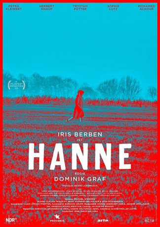

#12273 Hanne
 
 IMDB-Wertung: 6.8 / 10
IMDB-Wertung: 6.8 / 10  Metascore: 0
Metascore: 0 
Der Übergang in den Ruhestand ist ohnehin schon hart genug. Für Hanne Dührsen kommt es gleich am ersten Tag ihres Rentnerinnendaseins dann noch viel schlimmer: Bei einer Routineuntersuchung werden Auffälligkeiten in ihrem Blutbild gefunden...
Jahr: 2018
Dauer: 88 Minuten
FSK:
Land: Deutschland Studio: ARTETonspuren:
Untertitel:
Auflösung: 720p (1280x720) Größe: 2324 MB
Genre: Drama
Regisseur: Dominik Graf
Drehbuch: Beate Langmaack
Soundtrack: Sven Rossenbach, Florian van Volxem
Darsteller:
 Iris Berben als Hanne Dührsen
Iris Berben als Hanne Dührsen Petra Kleinert als Uli
Petra Kleinert als Uli Herbert Knaup als Heiner Witt
Herbert Knaup als Heiner Witt Trystan Pütter als Tim
Trystan Pütter als Tim Sönke Möhring als Sveni Kruse
Sönke Möhring als Sveni Kruse- Oliver Reinhard als Malermeister
- Jutta Wachowiak als Lisbeth
- Mohamed Achour als Dr. Hamed
- Sophie Lutz als Sophie
- Luise Aschenbrenner als Lizzy
- Jörg Gudzuhn als HaGü
- Eva Kryll als Miriam
- Werner Braunschädel als Taxifahrer
- Veronika Hertlein als Julia
- Barbara Krabbe als Musch
- Jaron Löwenberg als Schwimmlehrer
- Martin Resch als Fiete
- Anja Schiffel als Franziska Hamed
- Marlen Ulonska als Tochter HaGü
- Brian Völkner als Lorenz
- Tobias Lauterberg als Extra (uncredited)
Datei: X:\2018(G-M)\Hanne (2018, FSK, 1280x720).mkv seit 12.01.2020
Festplatte: HD 2018(G-Z)-2019(A-Z)
 Es gibt insgesamt 138 Filme in der Gruppe '2018(G-M)'
Es gibt insgesamt 138 Filme in der Gruppe '2018(G-M)'